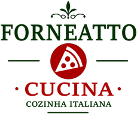

<!doctype html>
<html lang="pt-BR">
<meta charset="utf-8">
<meta name="viewport" content="width=device-width,initial-scale=1">
<title>Página não encontrada · Forneatto Cucina</title>
<meta name="robots" content="noindex">
<link rel="icon" href="assets/img/logos/web/forneatto-claro.png">
<link rel="preconnect" href="https://fonts.googleapis.com">
<link rel="preconnect" href="https://fonts.gstatic.com" crossorigin>
<link href="https://fonts.googleapis.com/css2?family=Bodoni+Moda:ital,opsz,wght@0,6..96,400;0,6..96,500;0,6..96,700&family=Archivo:wght@400;500;600;700&display=swap" rel="stylesheet">
<style>
/* Pagina de rota perdida. Mesma identidade da casa, sem navegacao de topo:
   quem chega aqui errou o caminho e precisa de SAIDA, nao de menu. */
:root{ --avorio:#fbf8f1;--carbone:#17140f;--grigio:#6d6659;--filo:#ddd4c2;--rosso:#c4161c;--verde:#0e3b1e }
*{box-sizing:border-box}
body{margin:0;min-height:100svh;display:grid;place-items:center;
  padding:clamp(24px,7vw,64px);background:var(--avorio);color:var(--carbone);
  font-family:"Archivo",-apple-system,sans-serif;line-height:1.6;-webkit-font-smoothing:antialiased}
.bloco{max-width:560px;width:100%;display:flex;flex-direction:column;
  gap:clamp(20px,4vw,30px);text-align:center}
.selo{width:clamp(56px,13vw,84px);height:auto;margin:0 auto;}
.numero{font-family:"Bodoni Moda",Didot,Georgia,serif;font-size:clamp(50px,15vw,92px);line-height:.9;
  margin:0;font-weight:500;letter-spacing:-.03em;color:var(--verde)}
h1{font-family:"Bodoni Moda",Didot,Georgia,serif;font-size:clamp(21px,5vw,30px);line-height:1.2;margin:0;
  font-weight:500;letter-spacing:-.01em;text-wrap:balance}
p{margin:0;color:var(--grigio);font-size:16px;max-width:42ch;margin-inline:auto}
.saidas{display:flex;flex-wrap:wrap;gap:10px;justify-content:center;margin-top:4px}
.bt{font-family:"Archivo",-apple-system,sans-serif;font-size:13.5px;font-weight:600;letter-spacing:.08em;
  text-transform:uppercase;padding:13px 22px;text-decoration:none;
  border:1px solid var(--filo);color:var(--carbone);border-radius:2px;
  transition:background .15s,color .15s,border-color .15s}
.bt:hover,.bt:focus-visible{background:var(--verde);border-color:var(--verde);color:#fbf8f1}
.bt--forte{background:var(--verde);border-color:var(--verde);color:#fbf8f1}
.bt--forte:hover,.bt--forte:focus-visible{background:transparent;color:var(--carbone);border-color:var(--filo)}
.bt:focus-visible{outline:2px solid var(--verde);outline-offset:3px}
.casas{margin-top:clamp(16px,4vw,26px);padding-top:clamp(16px,4vw,26px);
  border-top:1px solid var(--filo);display:flex;flex-direction:column;gap:11px}
.casas__t{font-family:"Archivo",-apple-system,sans-serif;font-size:11px;letter-spacing:.18em;
  text-transform:uppercase;color:var(--grigio)}
.casas__l{display:flex;flex-wrap:wrap;gap:12px 22px;justify-content:center}
.par{display:inline-flex;align-items:baseline;gap:7px;white-space:nowrap}
.casas__l a{color:var(--carbone);text-decoration:none;font-size:15px;
  border-bottom:1px solid var(--filo);padding-bottom:2px}
.casas__l a:hover,.casas__l a:focus-visible{border-color:var(--verde);color:var(--verde)}
.casas__l span{color:var(--grigio);font-size:13px}
</style>

<main class="bloco">
  
  <p class="numero">404</p>
  <h1>Você saiu da rota.</h1>
  <p>Esta página não existe. O forno, esse continua aceso no mesmo endereço.</p>
  <div class="saidas">
    <a class="bt bt--forte" href="/">Voltar ao início</a>
    
    <a class="bt" href="https://wa.me/5500000000000?text=Ol%C3%A1!%20Queria%20reservar%20uma%20mesa%20no%20Forneatto." target="_blank" rel="noopener">Reservar</a>
  </div>
  <div class="casas">
    <span class="casas__t">Nossas casas</span>
    <div class="casas__l">
      <span class="par"><a href="https://saikogastronomia.com.br">Saikō Gastronomia</a> <span>Japão</span></span>
      <span class="par"><a href="https://kikiu.com.br">Kikiu Gastro Bar</a> <span>Noite</span></span>
    </div>
  </div>
</main>
</html>
